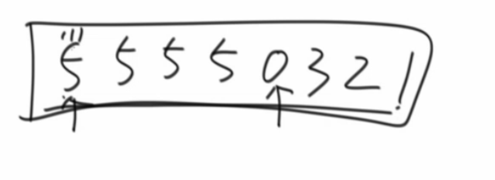
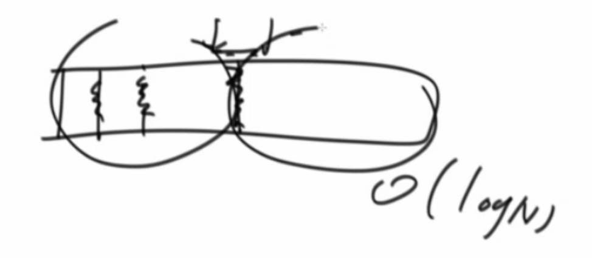

基本的排序算法
基本的排序算法
冒泡排序
1 | public static void bubbleSort(int[] arr) { |
时间复杂度$O(N^2)$
空间复杂度$O(1)$
稳定排序
代码说明：
变量$e$代表的是每次冒泡后的终止位置。
每次冒泡变量$i$从0开始，到$e-1$的位置。
插入排序
1 | public static void insertionSort(int[] arr) { |
时间复杂度$O(N^2)$
空间复杂度$O(1)$
稳定排序
代码说明：
- 变量$i$代表的新进来的数的位置，第一个数不用排序，故从1开始。
- 插入时，前面的数组已经是有序的了。把新的数从末尾依次进行比较即可。
选择排序
1 | public static void selectionSort(int[] arr) { |
时间复杂度$O(N^2)$
空间复杂度$O(1)$
不稳定排序

代码说明：
- 变量$i$代表该轮选择后，最后要放的数的位置。并设置第一个数为默认最小值。
- 变量$j$从索引$i+1$遍历到数组末尾。
- 每轮选择出最小的数后与初始位于$i$位置的数进行交换。
主定理
递归表达式为$T(n)=aT(\frac{n}{b})+O(N^d)$的前提下
- $log_b^a>d$ 时，复杂度为 $O(N^{log_b^a})$
- $log_b^a<d$ 时，复杂度为 $O(N^d)$
- $log_b^a=d$ 时，复杂度为 $O(N^d \cdot logN)$
归并排序
1 | public static void mergeSort(int[] arr) { |
时间复杂度$O(NlogN)$
空间复杂度$O(N)$
归并排序可以拓展用于逆序对、小和问题的解答。
原地归并排序虽然空间复杂度为$O(1)$，但时间复杂度是$O(N^2)$
快速排序
经典快排
1 | public static void quickSort(int[] arr, int l, int r) { |
代码分析：
- partition中返回的less一定不会越界，因为在$i=r$时必定less会增加。
随机快排
1 | public static void quickSort(int[] arr) { |
代码分析：
先随机选择一个数与最后一个数交换
partition返回的是等于数组中等于目标值的最左、最右索引
时间复杂度
长期期望$O(NlogN)$，且常数项较小，工程中常用快排。
最坏情况$O(N^2)$
空间复杂度来源于记录断点的深度（最深一次的递归后可以释放），最好$O(logN)$，最坏$O(N)$

快排一般是不稳定，源于partition的不稳定。论文01 stable sort可以满足稳定性。
拓展：
- 一个数组，奇数放左边，偶数放右边。空间$O(1)$，时间$O(NlogN)$。并且保持稳定？
实际和快排的partition算法一样，不可能实现。
- 荷兰国旗问题
思路和随机快排一样
1 | public static int[] partition(int[] arr, int l, int r, int p) { |
堆排序
堆是完全二叉树.
堆用数组存储，数组索引从0开始[其实我觉得从1开始更方便]。若当前节点索引为$i$。则查找父节点的索引为$(i-1)/2$,左右子节点的索引分别为$2i+1$和$2i+2$.
先建堆再排序
1 | public static void heapSort(int[] arr) { |
建堆的时间复杂度分析
- 将第$N$个节点插入到堆中，复杂度为$O(logN)$
- 故总的时间复杂度为
堆排序的时间复杂度$O(NlogN)$，空间复杂度$O(1)$
堆排序不稳定，且常数项大，故工程中不常用。
综合排序
1 | Arrays.sort(arr) |
- size<60时采用插入排序，原因是常数项低
- size>60时
- 基础类型 快排
- 自定义对象 归并排序 原因：稳定性
桶排序
以上的排序都是基于比较的排序，可证明基于比较的排序时间复杂度最小都是$O(N!)$ ~ $O(NlogN)$ 级别。桶排序不是基于比较的排序，时间复杂度可达$O(N)$。
1 | public static void bucketSort(int[] arr) { |
计数排序
时间复杂度：$O(N)$
空间复杂度：$O(N)$
例题：给定一个无序数组，在$O(N)$的时间复杂度下求解对应有序数组中相邻两数的最大值。注：数组最大值和最小值差很大，不能对其中的每个数都建桶。
思路：关键点在于决定桶的数量是多少。例如0为最小数，99为最大数，共9个数，则分10个桶，必有一个桶是空的。此时最大差值一定在两个不同桶之间。因为桶内最大差为10，由于空桶存在，至少有一对差值大于10的数。
具体代码如下所示：
1 | public static int maxGap(int[] nums) { |
基数排序
待写